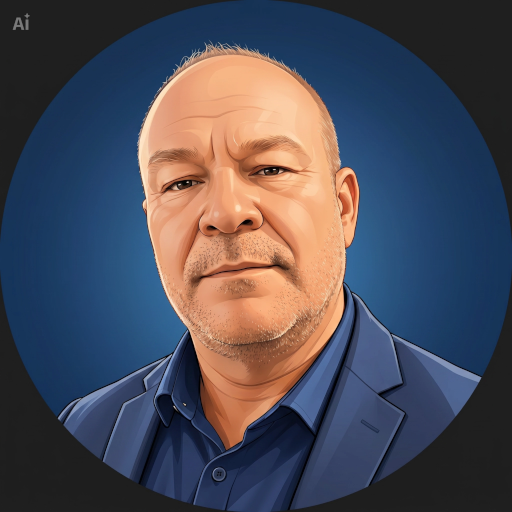

About
Kevin Alexander Guerra
I’m a senior solution architect and hands-on software engineer. I started programming as a hobby and still like getting close enough to a system to understand why it behaves the way it does.
Today I lead Americas traceability work at MAF RODA Agrobotic. My past work includes localization at Google, infrastructure testing at VMware, and OCR and video capture at DirecTV.

Engineering interests
Across the stack.
Industrial automation and machine vision, cloud and enterprise architecture, low-level performance, and the design of reliable data systems.
Outside engineering, I enjoy tennis and table tennis. I averaged about 11 seconds on a Rubik’s Cube in middle school.
Experience